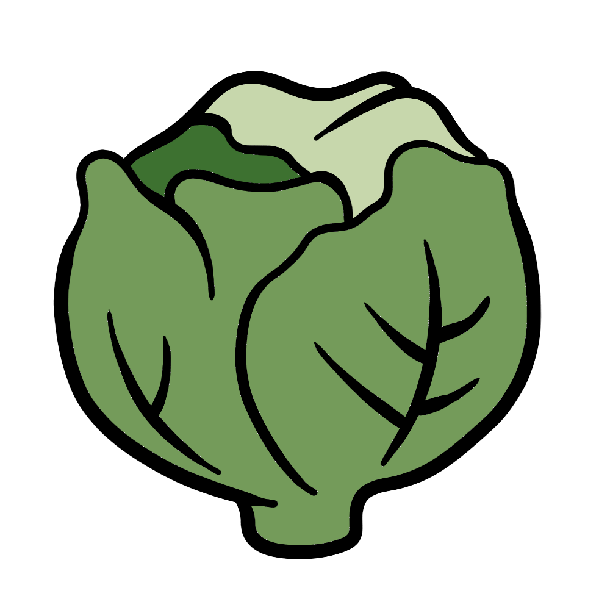

How to grow Lettuce
A Step by step Guide
Lettuce is a nutritious and versatile leafy green that thrives in cool weather. With the right conditions and care, you can successfully grow this vegetable in your garden or even indoors. Follow this guide to learn how to cultivate healthy and delicious lettuce.
Difficulty Rating: Easy
Best Season to Grow: Spring and Fall
Can Be Grown: Both Indoors and Outdoors
Supplies Needed to Grow Lettuce
Lettuce seeds or seedlings
Well-draining, nutrient-rich soil
Compost or balanced fertilizer (10-10-10)
Garden trowel
Watering can or hose
Mulch (straw or wood chips)
Raised garden bed or shallow containers (for small spaces)
Setting Up Your Lettuce Garden
Choosing the Right Location
Sunlight: Lettuce requires 4-6 hours of full to partial sun per day.
Soil: Ensure the soil is well-draining and rich in organic matter with a pH between 6.0 and 7.0.
Spacing: Sow lettuce seeds 6-12 inches apart, depending on the variety.
Indoor Setup: If growing indoors, use shallow containers (at least 6 inches deep) with loose, nutrient-rich soil and place them in a sunny window or under grow lights.
Preparing the Soil
Loosen the soil to a depth of at least 6 inches to allow proper root development.
Mix compost into the soil to provide nutrients.
Ensure the soil remains moist but not waterlogged.
Planting Lettuce
Direct Sowing: Lettuce grows best when directly sown ¼ inch deep in early spring or late summer.
Thinning: Once seedlings are 2 inches tall, thin them to 6-12 inches apart to allow proper leaf growth.
Caring for Your Lettuce Plants

Watering
Keep the soil consistently moist, providing 1 inch of water per week.
Avoid overwatering to prevent root rot.

Fertilizing
Apply a balanced fertilizer every 2-3 weeks to encourage leafy growth.
Avoid excessive nitrogen, as it can lead to overly bitter leaves.

Mulching & Weed Control
Apply mulch around plants to retain moisture and suppress weeds.
Regularly remove weeds to prevent competition for nutrients.

Pest and Disease Prevention
Use row covers to protect plants from aphids, slugs, and caterpillars.
Inspect leaves regularly and remove pests by hand or use organic insecticides.

Harvesting
Lettuce is ready to harvest in 30-70 days, depending on the variety.
For loose-leaf varieties, harvest outer leaves as needed.
For head varieties, cut the entire head at the base once mature.
Regular harvesting encourages continued growth.
By following these steps, you can successfully grow lettuce and enjoy fresh, homegrown greens throughout the season. Happy gardening! 🌱